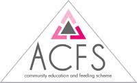
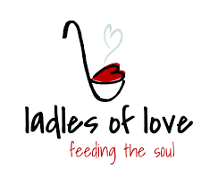
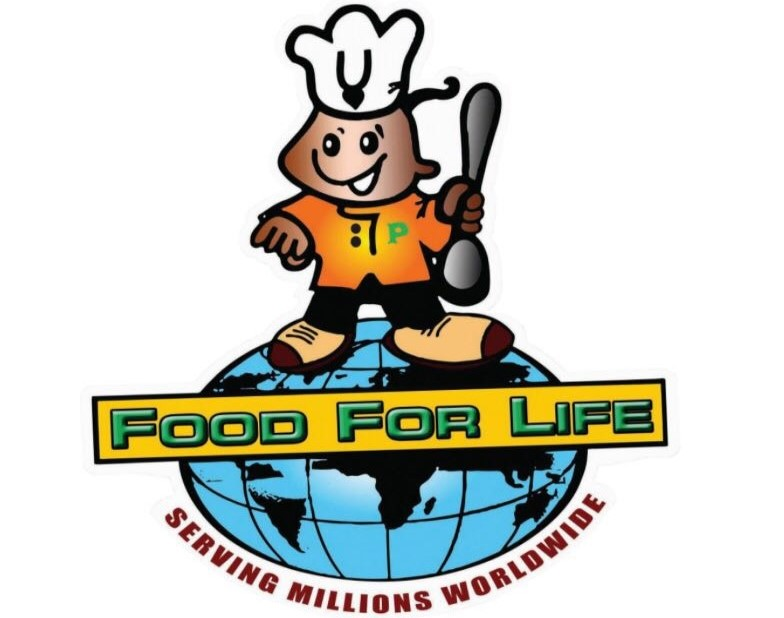
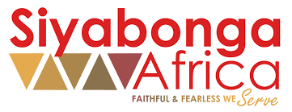
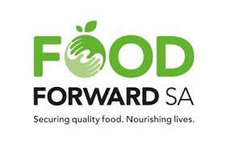

List of Charities
forgood: This is a great site if you don't know which charity you can or want to donate to.

ACFS Community Education and Feeding Scheme

Ladles of Love

FOOD FOR LIFE

Siyabonga Africa
Rise Against Hunger Africa
The Lunchbox Fund

FoodForward SA
Agricultural Supplies (Affordable for smallscale farming)
Agriculture Policy in South Africa
Study done on limitations emerging farmer's face
Funding for community agricuture programs South Africa
Daff.gov.za - funding (government)
Funds and marketing for SMME Sector